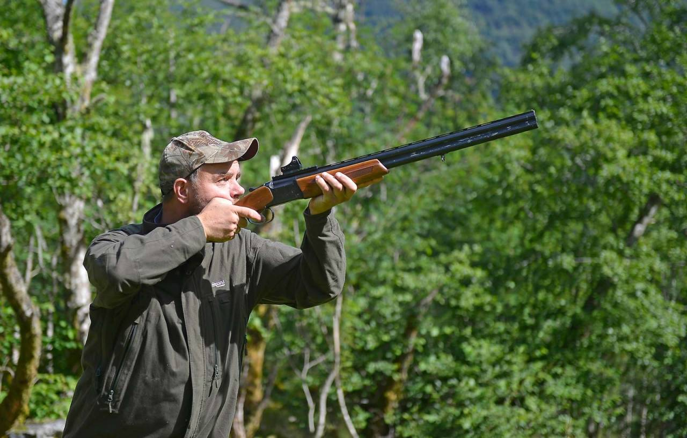

Hver tirsdag kjører jeg i en halv time til moss etter skolen. Det er fordi på fritiden driver jeg med hagleskyting.

Her er noen punkter med grunner til at jeg liker hagleskyting.
Det er en morsom fritidsaktivitet
Det er utfordrende
Det er et veldig hyggelig miljø
Et problem er at det er ganske dyrt
Ettersom jeg driver med hagleskyting har jeg kjøpt min egen hagle. PS. Det er ikke billig.
Jeg har bare skutt i et halvt år, men jeg har allerede kommet meg inn i leirdueutvalget.
Om to uker skal jeg prøve meg på en konkurranse.
Fakta om skytebanen i Moss
Det er tre baner man kan skyte på
Samfunnet der er veldig hyggelig og positivt
Det er opent for skyting hver tirsdag og fredag, og for medlemmer på annen hver lørdag
Man får veldig mye god hjelp og gode tips av de som har skutt mer enn deg
Det er ingen negativitet om spørsmål som gjør at man bruker litt lenger tid på en serie
Når man skyter tar man en serie om gangen. En serie består av 25 skudd på leirduer. Hvis du velger sporting ( Det jeg gjør) Så skyter du på duer som kommer fra alle kanter og vinkler. På sporting kan det komme to og to også.
Hvis du hvelger trap skyter du på duer som går fra deg. Folk synes ofte at trap er litt mer avslappende og enklere enn sportning fordi det kommer en og en så det ikke blir så mye stress.
Ettersom jeg er så interesert i skyting har de valgt å sponse meg med 5000kr. Det skal brukes på skudd, utstyr, duer (leirduer) og konkuranser.